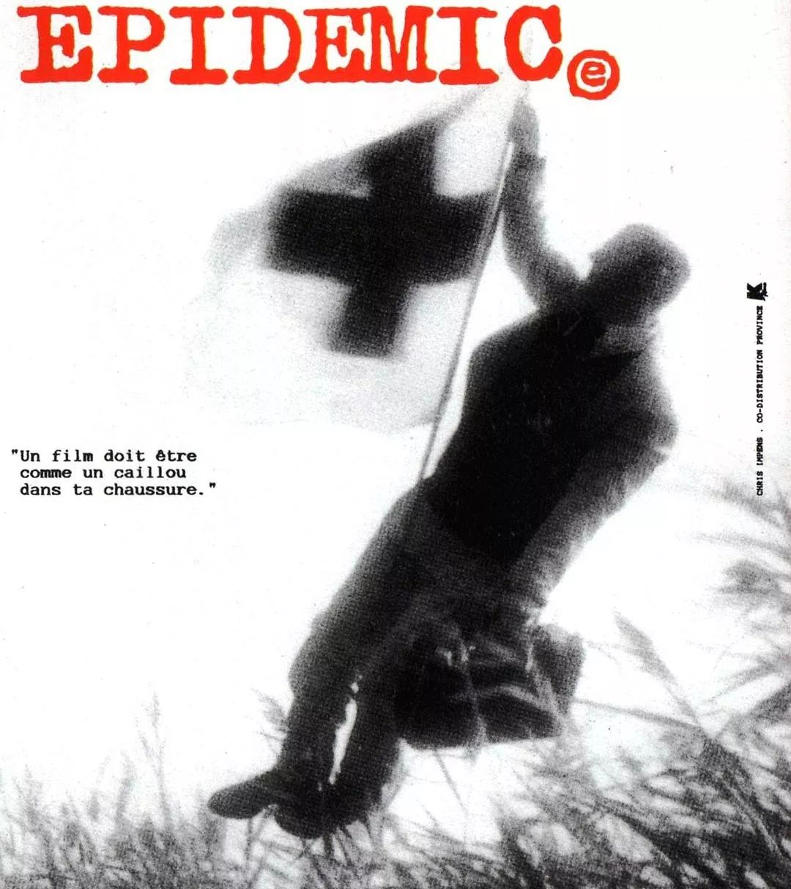
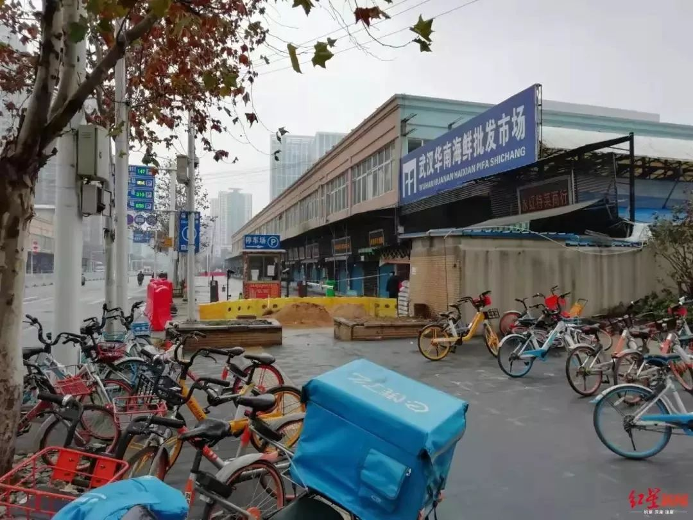
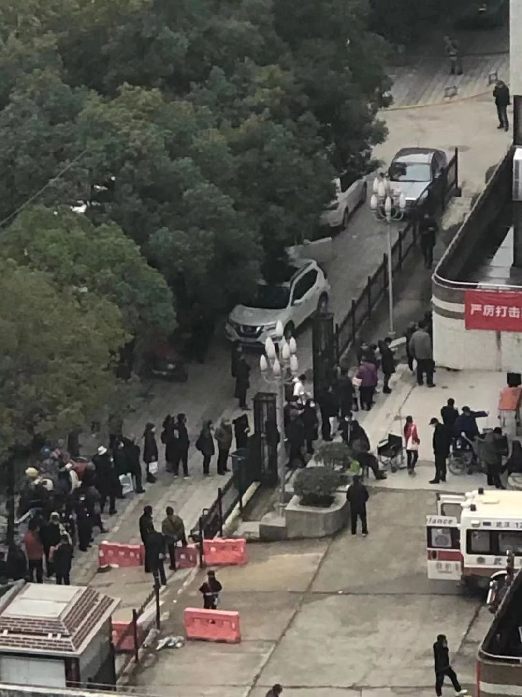

武汉试剂代理商口述：我所知道的新型肺炎确诊盒供应现状
原文链接 备份链接 图 / 上海捷诺生物官网 生产企业工人大多已经放假回家，厂家备货也不够充足。就算外面有支援调货过来，封城后也已经很难运送进来了。很多人想当然地以为这是国家供应的，其实它是按照市场采购流程走的，厂商自己要想办法完成配 …

刘洋
大姨：同济医院一线工作者
医生会暴露感染很大一部分原因是，
有大量市民前期隐瞒病史
————————————————
我家在X医院附近，大姨是同济医院的医护人员，她对目前一线的情况比较了解。
20号中央了解武汉的真实情况后，立刻着手处理这里的疫情，目前几乎所有可以调动的相关医生都已经被安排在定点医院看诊，隔离医院也着手建造。武汉的情况还是很糟心。不过，网络上疯传的相关疫情消息，有些不能轻信。
医生们的确很难，原本美满的除夕夜，该是和家人守着年夜饭团圆的日子，却身处在最危险的隔离区，连轴工作好几天。某种道德绑架感，生理和心理的不安全感，和超高负荷的运转，让他们发出连连“撑不住”的感慨，完全可以理解。只是，有些在外广传的资讯过分夸张，甚至有造假的嫌疑。定点医院存在医生暴露感染的情况，但网传同济医院被感染医生过世一事，纯属子虚乌有。大姨跟我说，那人被传去世的前一天还在做蹲下起立。医生会暴露感染很大一部分原因是，有大量市民前期隐瞒病史，说自己没有去过华南海鲜城，但其实那时他们已经染上肺炎，医生放松警惕和他们接触，很容易被传染。

事情发生变化是在20号央视发文的那一天，也就是中央掌握武汉真实情况的日子。之前这里的疫情，被隐瞒了太久太久。20号那一天，这座已经满是疮痍的城市才真正被中央接管，中央直接插手武汉新型肺炎的防控工作。现在医生的防护装备正在一点点优化。
不过，至少到现在，大部分医生都是自己扛，呼吁外界援助，这是没有办法的事情。同济协和一开始定点未完全设置，所以有很多疑似病人都在那边，金银潭医院直接接受协和发热病人。不可否认，前几天很可怕，根本支撑不住。昨天除夕夜，八点送到了第一批物资。从今天开始，物资陆陆续续运送到。在这些物资和人员没到的昨天晚上，前线医务人员非常崩溃。
还要补充一点消息。大姨说，他们周围的很多小护士出行上班，是个很大的问题。公共交通取消了，没有私家车的，还找朋友借电动车。医院没有专车接送，民间自发组织接送医护人员，并不是很全面。

唐铭
父母：中国人民解放军中部战区总医院非一线工作
现在最大的问题，就是医疗物资紧缺
————————————————
武汉封城了，留下的一千万人都在恐惧，我也一样，但我已经是安全的大多数之一。为了保命，我每天把自己锁在家里，尽可能隔绝一切传染源，虽然家就在医院里，但不出门就不会有太大问题；要命的是，身为这座城里医护人员的家属，我时刻揪心着父母的安全。私心告诉我，绝不能让爸爸妈妈再走进诊室，那实在太危险了；但理性也在捶打我，在拯救生命的地方，他们必须是第一线的战士。

我的父母在中国人民解放军中部战区总医院（原广州军区武汉总医院）工作，这仅仅只是一家普通医院，并非现在武昌区的新型肺炎定点医院，目前若存在疑似病例，病人都会被劝到七医院或其他定点医院接受治疗，普通医院拒绝接收、治疗发热病人，但非定点医院的医生都没有回家，随时待命，到年后开始轮班。我的母亲在儿科诊室上班，除了顾好自己的科室外，他们也可能随时作为紧急医疗队、战备医疗队的一员，在一线遭遇突发事件时奔赴战场。
爸爸妈妈告诉我，他们的许多朋友在定点医院工作，一线的战斗用“兵荒马乱”形容，绝不为过。现在的最大问题，如同网上爆料，医疗物资紧缺，完全跟不上需求：没有防护服，只有普通的白大褂；门诊医生和参与手术者才能使用医用外科口罩，留给其他医护人员的只有普通口罩，外界疯抢的N95在这里不存在，医生和护士几乎是直接暴露在医院里，和病人无隔绝接触。爸爸同科室的同事跟着救护队到定点医院支援，最开始并没有护目镜。结果，那位同事一直发烧，现在被划为疑似病例，已经被隔离起来了。

经过父母的描述，我了解到目前的情况是，武昌区发热门诊总数严重不足，已经超负荷；定点医院的医疗资源供不应求，无论是硬件还是软件都存在极大的缺口。到七医院就诊需要排上老久的队，而且可能没有位置。有的项目甚至需要通宵排队。轻度病症的疑似病例医院已经没有足够的空间给他们隔离，只能回家自行隔离吃药。
大家最关心的试剂盒，目前在普通医院完全没有，定点医院也存在试剂盒数量不足的问题，网上热传的这一情况的确不假。不只是武汉外的大家每天接收着漫天的疫情资讯，城内的我们也一样。刷屏朋友圈的消息有真有假，有些甚至当地医生都会在自己的朋友圈转发。就我所了解到的，目前协和医院没有物资这一情况更靠近真实情况。
有的医生需要从汉口到武昌来，在全市公共交通瘫痪的情况下，如果没有私家车，就只能叫的士或滴滴，如今的士单双号限行，滴滴也暂停营业。为了方便医生前往医院，政府配备了专门的车辆接送。除了本地的医生外，这两天也陆续有北京、上海的医疗团队到定点医院的发烧诊室支援。

郭其
姑父：湖北省人民医院，现在被临时抽调去金银谭医院
吃方便面干净啊，现在买熟食都不能确定是否卫生
——————————————————————
和大家一样，很多网上流传的消息，我无法确定。不过，昨天晚上医护人员吃方便面的消息，在我看来，很正常啊。我从姑父那里了解到，同济医院的物资确实已经到了，同济协和的人都是吃方便面。它干净啊，现在买熟食不能确定是否卫生。至少，方便面外面都是塑料包装的。
今天一大早，姑父就被叫走了，35岁以下都被调去金银谭，“老家伙”们坐镇本院。现在医护人员严重不足。武昌地区定点医院人不够了，开始调其他区医院的医护人员。如果去金银谭的人“阵亡”了，下一批人继续顶上。

现在医护人员很难，警察也很难。军队也不放假。昨天军队军医已经集结完毕了，第一批物资应该是今天要到了，还有全国各地第一批驰援的医生也集结完毕了，马上也要到了。但试剂盒，据我姑父说，根本不够啊。这种试剂盒，用一次就要换，周边地区疑似病患太多，10w你以为够用吗？根本顶不住几天。还有防护服，不够，新闻说有医生穿尿不湿，就是怕污染了最后一套，这不是捏造的。
（文中姓名均为化名，指导老师：吴畅畅）
原文链接 备份链接 图 / 上海捷诺生物官网 生产企业工人大多已经放假回家，厂家备货也不够充足。就算外面有支援调货过来，封城后也已经很难运送进来了。很多人想当然地以为这是国家供应的，其实它是按照市场采购流程走的，厂商自己要想办法完成配 …
原文链接 备份链接 3月22日。 封城第60日。难以想象的日子。 昨晚的雨下得还不小，但今天，天色又明亮了起来。无疫情小区逐渐内部开放，今天听到窗外有小孩的笑声，真是久违的声音。外出小区也被允许，只是需要控制时间。去超市购物，也建议错峰。 …
原文链接 备份链接 3月21日。 封城第59天。这么长时间了！ 昨天那么大的太阳，今天突然就阴了。下午还下了点雨。这时节的春雨，对于院子里的树以及花，都还是很需要的。前两三天，武大樱花盛开，树下空荡无人，估计是记者拍了一些照片，同学群里便 …
原文链接 备份链接 3月20日。 继续大晴，气温到中午已高达26度。家里的暖气还没关，发现里外温度都差不多了。开窗透气时，意外发现院子里飞来几只喜鹊。它们在门前的香樟树和玉兰树上跳来跳去，有一只还进到我家门口，喝石臼里的水。看得人很是欢 …
原文链接 备份链接 ********** *****黄锡璆表示，现在的技术条件比建设小汤山医院时好多了，他希望火神山医院的建设能够实现更好的使用效果。***** 火神山医院施工现场。受访者供图 文 | 新京报记者 韩沁珂 编辑｜王婧祎 校 …